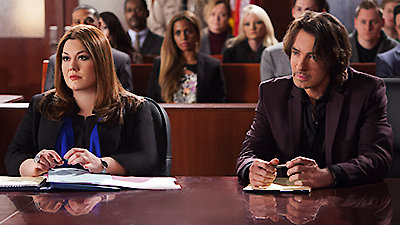
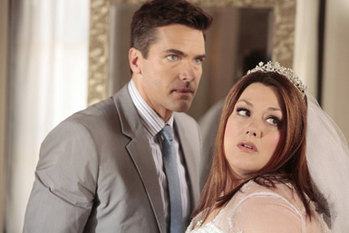
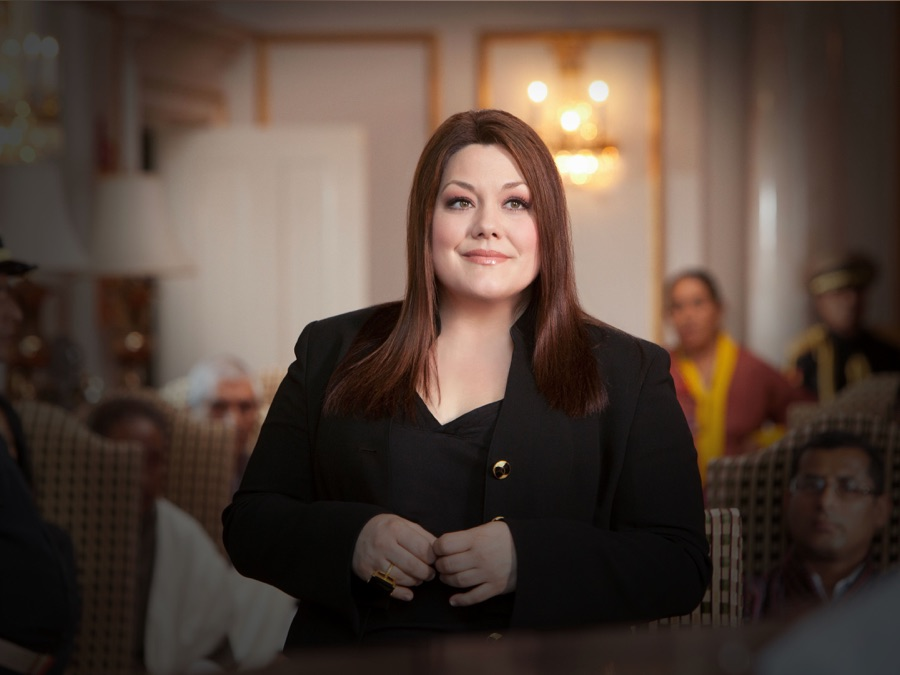

Plot
The series revolves around vapid aspiring model Deborah "Deb" Dobkins (played by Brooke D'Orsay), who is killed in a car crash on the way to an audition for The Price Is Right. As her soul enters the gates of Heaven, she finds herself being judged by a gatekeeper named Fred (Ben Feldman). As a result of her shallowness, Fred declares her a "zero-zero", since she has performed zero good deeds and zero bad deeds during her time on Earth. While he is distracted, Deb presses the "return" key before Fred can stop her, and is brought back to life in the body of a recently deceased lawyer named Jane Bingum (Elliott), who died protecting her boss, Jay Parker (Josh Stamberg).
Jane is the complete opposite of Deb; she is brilliant, hard-working, charitable, and plus-sized. Deb finds that Jane also works in the same law firm, Harrison-Parker, as Deb's fiancé Grayson Kent (Jackson Hurst). After immediately telling her best friend, Stacy Barrett (April Bowlby), of her predicament, Deb prepares herself to tell Grayson the truth about her new body. However, Fred's assignment as Deb's guardian angel serves as punishment for letting her leave heaven. His purpose on Earth is to prevent Deb from telling Grayson the truth and insisting that no one else can know that she is really Deb in Jane's body.
Deb struggles to learn more about her inherited life, learning lessons about self-esteem and personal acceptance. Eventually, the real Jane Bingum (played by Natalie Hall) reappears in another person's body after having pressed the return key, leading Deb to finally reveal the truth to Grayson, now one of Jane's closest friends. Grayson, after grieving and moving on from Deb's passing, becomes conflicted, but finally accepts Deb in her new body, saying that he wants her to be her and no one else.In addition to working with Grayson at the law firm, Deb (as Jane) also contends with her professional rival, Kim Kaswell (Kate Levering), who briefly dates Grayson after Deb's passing.
Critical Response
Drop Dead Diva holds a score of 68 out of 100 on Metacritic, based on 12 reviews by critics for the first season. Writing for the Los Angeles Times, Mary McNamara praised Josh Berman for the series, saying: "Berman produces a deft juggling trick of heart and humor, balancing Deb's shallowness with some solid common sense and Jane's inadequate self esteem with kindness and legal brilliance." She added describing the series itself as "a lot of fun to watch".The New York Times Alessandra Stanley commented: "while the presumption that a woman can be either brainy or beautiful, or in this case, good or thin, but not both, is a bit primitive, the series has humor and charm beneath its facile message, in large part (no disrespect intended) to a subtle, winning performance by Ms. Elliott."
Brian Lowry of Variety was less enthusiastic about the series, commenting: "Granted, there's much to be said for a program featuring a smart, plus-sized heroine in today's rail-thin TV world, but "Diva" under nourishes its premise amid a sea of legal-procedural banalities." He went on to state that "the epiphanies come a little too easily, and the legal triumphs predicated on knowledge of posing are a little too "Legally Blonde." New York Daily News David Hinckley, gave the premiere two out of five stars, describing Drop Dead Diva as "still feeling like a pasted-together assortment of ideas and plot lines from productions past." However, on a more positive note he stated that "this could turn out to be the TV equivalent of a good old-fashioned summer beach read."
Filming
Though the background setting for Drop Dead Diva is set in Los Angeles, the series is filmed in Peachtree City, Georgia, and Senoia, Georgia, with principal photography taking place in a studio contained in a large hangar at Atlanta Regional Airport, and outdoor locations shot around the town. Filming originally took place in Georgia for tax incentives.
The show's premiere scored a 1.6 overall and more than 2.8 million viewers tuning in.[21] Drop Dead Diva scored its highest ratings ever among women 18–49 (2.0), a 25% increase over its season-to-date average, and women 25–54 (2.3), a 28% increase over its season-to-date average.